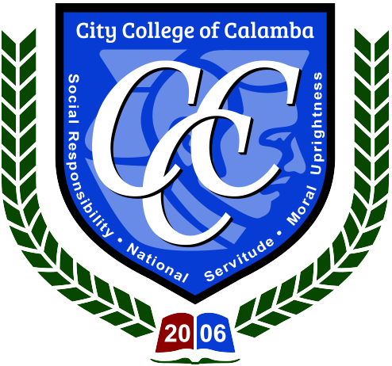

The Department of Teacher Education shall be known as the center of excellence in teacher development and training in the region, thereby producing global education shapers who possess intellectual, moral, and ethical standards for the 21st century teacher and graduates.
The Department of Teacher Education shall provide quality teaching and learning experiences by exposing both the faculty and students to greater deal of oppor tunities for their professional and pedagogical advancements.